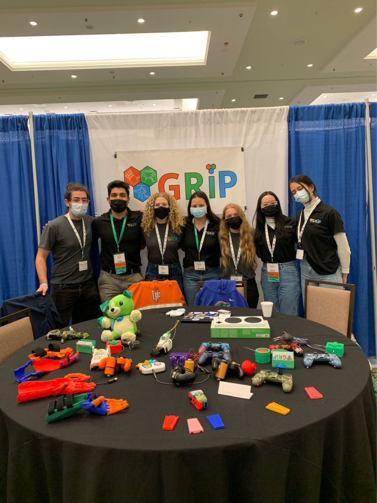
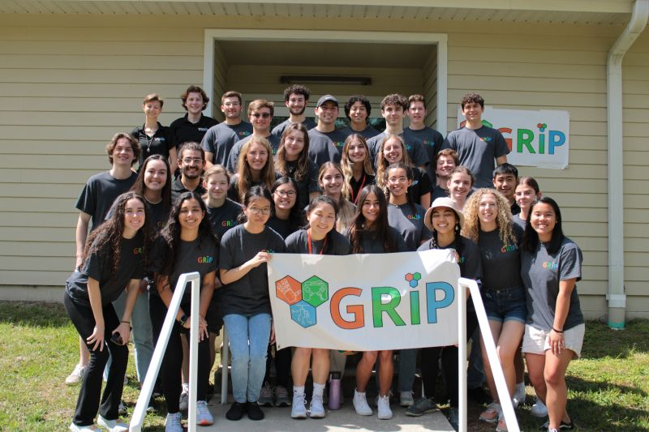

Mechanical Engineering Graduate Association (MEGA)
Lead an eight-person executive team. Represent more than 50 graduate and postdoctoral students.
Teaching, mentoring, student leadership, and outreach.
Fall 2026: mentoring four undergraduate researchers. I have also mentored student work in prosthetic-knee research.
Lead an eight-person executive team. Represent more than 50 graduate and postdoctoral students.
Outreach, mentorship, and STEM programming.
Modular accessible gaming controllers and a limb attachment with interchangeable implements. The limb attachment won Best Documentation in the 2024 Global Innovation Challenge.
Started as a SOLIDWORKS team member, became president. Led student teams building assistive devices.


A program on intellectual property practice and careers between engineering and law. Five virtual seminars (Fridays, October 2–30, 2026) and two days of in-person career advising and networking in Washington, D.C., planned for the week of January 4, 2027 (exact dates TBD).
Nashville Food Project · a women’s homeless shelter · Burro Bags